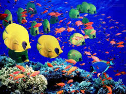

Хургада є центром для любителів водних видів спорту , таких як: віндсерфінг , кайтинг , глибоководна рибалка , плавання , всі можливі види снорклинга і дайвінгу , а також морські прогулянки під вітрилами. Велика кількість дайвінг -центрів у Хургаді дає свободу вибору за територіальним і іншому ознаками . Для любителів підводного плавання організовується поїздка до коралових островів , всього в годині їзди на катері від курорту. У відмінності від Шарм- Ель- Шейха , корали в Хургаді зустрічаються набагато рідше , в основному біля декількох готелів в північній частині курортного містечка. Якщо набридне пляжний відпочинок - їдьте в комплекс " Нью Марина" , що знаходиться біля порту . Тут можна орендувати яхту або пошопилась в торговому центрі. Уздовж набережної відкриті кафе , ресторани і магазини. Рекомендуємо звичайно ж відвідати Каїр , де знаходяться одні з найвідоміших визначних пам'яток світу , - піраміди Гізи , які розташовані в 500 км від курорту ; а також Луксор . Колись на місці цього міста процвітала столиця староєгипетської держави - Фіви .

Червоне море яке розташоване в Єгипті — унікальне. По-перше, такої кількості коралів і різнокольорових рибок немає більше ніде на планеті. По-друге, воно найсолоніше море Світового океану. По-третє, в нього не впадає жодна річка, приносячи мул і пісок, тому вода в Червоному морі кристально чиста.

Шарм- Ель- Шейх досить новий курорт , для респектабельного або молодіжного відпочинку . Цей єгипетський курорт знаменитий своєю бухтою Наама Бей , де є прогулянкова зона з безліччю сувенірних крамниць , клубів , кафе , дискотек. Готелі високого класу розташовані на першій береговій лінії , готелі 3 і 4 зірки розташовані , як правило , на другому берегової лінії. У Шарм- Ель- Шейху коралові пляжі , з понтонами , вхід в море в спеціальному взутті . Гарне місце для підводного плавання. Чиста і тепла вода , багатий підводний світ і велика кількість коралових рифів створюють гарні умови для заняття дайвінгом і снорклингом як взимку , так і влітку. До послуг туристів - численні дайвінг- клуби , школи підводного плавання , яхти , інструктори , а також пункти прокату масок , ласт , аквалангів і т.п.